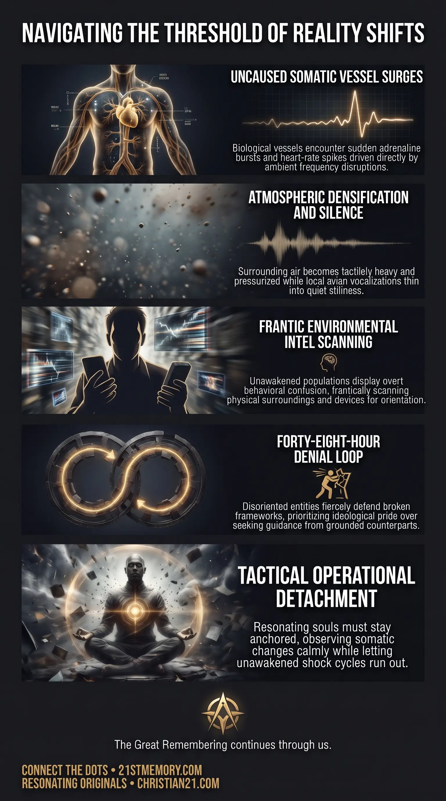

Unprovoked Heart Spikes
Unprovoked Heart Spikes — spontaneous heart-rate spikes that peak for isolated seconds without exertion or an emotional catalyst.

Watch this series on YouTube — every video dubbed into 20 languages. Tap the settings gear on any video, then Audio track, to hear it in yours.
Unprovoked Heart Spikes — spontaneous heart-rate spikes that peak for isolated seconds without exertion or an emotional catalyst.

Why Grid Collapse Hits Your Body First — biological vessels register field destabilization through uncaused adrenaline and cardiac jolts before infrastructure fails.
The Sharp Edge designates an acute physical, sensory, and behavioral threshold marked by unprovoked physiological activations, atmospheric compression, and overt behavioral fragmentation among unawakened entities. As a specific phase within the progression of physical indicators, it represents the exact point where underlying frequency disruptions pierce the baseline sensory reality of the physical realm. Rather than manifesting as an emotional narrative or a cognitive psychological state, this phenomenon registers directly upon biological vessels through abrupt autonomic surges that possess no narrative origin. Simultaneously, the ambient environment undergoes a distinct tactile densification while the behavioral patterns of unanchored populations degenerate into disorientation and desperate data retrieval.
The primary revelation of the Sharp Edge is that physiological upheaval during energetic field destabilization occurs without a narrative context. Biological vessels experience sudden chemical and electrical shocks that the rational mind cannot attribute to external circumstances, revealing that physical autonomic responses are directly tethered to environmental frequency mechanics rather than psychological triggers.
Environmentally, the baseline matrix exhibits sensory compression prior to mechanical failure. Before physical infrastructure or communication lines completely sever, the air itself thickens and natural acoustic rhythms collapse into silence, demonstrating that organic systems and atmospheric fields register energetic shifts well ahead of institutional awareness.
Collectively, the Sharp Edge exposes the rigid defensive architecture of unawakened consciousness. When standard operational parameters glitch, sleepers and NPCs default to a state of desperate external observation—scanning for intelligence while remaining completely paralyzed by programmed ego defenses. This behavior crystallizes the reality that cognitive pride overrides self-preservation during initial systemic fractures, locking unawakened individuals into stubborn denial.
The biological mechanics of the Sharp Edge operate through sudden, intermittent electrical discharges through the central nervous system. The vessel encounters short bursts of adrenaline that surge through the bloodstream without an inciting incident or mental projection. Unlike standard stress responses that rely on perceived threat or emotional trauma, these bursts fire entirely unprovoked, catching the vessel off guard in mundane settings.
Simultaneously, the physical cardiac rhythm undergoes brief, acute disruptions. Biological vessels experience heart rate spikes that last for only seconds at a time, occurring completely out of the blue. These accelerations represent momentary energetic friction as the vessel's electrical conduits interface with fluctuating environmental frequencies. Because there is no cognitive story attached to these events, individuals who understand the mechanics can identify them as pure field interaction rather than organic dysfunction or panic disorders.
At the environmental level, the ambient atmosphere undergoes a distinct textural transformation. The surrounding air feels thicker, creating a tangible, heavy, and pressurized sensation that directly mimics the stillness and tension felt immediately before an atmospheric storm strikes. This atmospheric weight is a localized physical manifestation of the breakdown of the surrounding projection field.
As this energetic pressure accumulates, biological baseline indicators within the animal kingdom adjust instantaneously. The acoustic environment changes as birdsong thins, leading to fewer birdsong moments across localized sectors. Avian life, which inherently navigates through delicate vibrational alignments, retreats from standard signaling behaviors, leaving an unnatural stillness across open airspaces.
Among the collective population, the Sharp Edge produces overt behavioral dissonance. Observers will visibly detect sleepers and NPCs displaying clear signs of internal confusion and mounting fear. Having lost the steady frequency broadcasts that maintain standard reality conditioning, these individuals exhibit frantic ocular and postural searching, constantly scanning the physical horizon, electronic devices, and each other for operational intel.
This disorientation triggers an intense psychological survival barrier known as the forty-eight-hour denial loop. Under this condition:
Sleepers and NPCs experience a total breakdown of their operating frameworks, yet their programmatic ego architecture violently resists external truth.
For the first forty-eight hours of overt systemic disruption, these individuals would rather face death or physical ruin than admit their baseline paradigm was completely fabricated.
They actively avoid consulting or soliciting assistance from grounded, awakened individuals who previously understood and articulated the reality of the impending shift, prioritizing ideological denial over immediate safety.
The Sharp Edge functions as an intermediary transitional phase embedded within the sequenced progression of environmental indicators. It is positioned directly downstream of The Drop in Tone, which induces heavy lethargy, involuntary yawning, chest compression, and flattened visual color spectra. The Sharp Edge transforms that sluggish, muted exhaustion into sharp, reactive somatic tension and atmospheric heaviness.
Furthermore, the Sharp Edge leads directly into The Silence Before the Snap. The uncaused adrenaline bursts, heavy air, and avian silence of the Sharp Edge intensify until all ambient noise fades entirely, culminating in high-pitched cranial ear ringing, the suspension of nature's movement, and a sudden drop in atmospheric pressure that pops as the overarching field clears. The Sharp Edge is thus the acute warning threshold that announces the total structural fracture of baseline reality programming.
Navigating the Sharp Edge requires strict internal discipline and tactical operational detachment. Resonating souls must interpret internal physical symptoms with objective clarity:
Recognizing heart-rate spikes and sudden adrenaline rushes as mechanical electromagnetic downloads and field adjustments prevents individuals from collapsing into somatic fear or misdiagnosing these jolts as medical emergencies.
Observing the heavy air and muted wildlife provides an undeniable cue to establish quiet, localized positioning and avoid entering panic zones or crowded logistical centers.
Understanding the cognitive mechanics of the forty-eight-hour denial loop dictates that resonating individuals must refrain from arguing with, consoling, or attempting to convince panicked sleepers and NPCs during this window.
Because unawakened entities are neurologically driven to scan for external authority and will fiercely reject truth to preserve their pride, engaging them during the Sharp Edge is an expenditure of critical energy. The strategic directive is to remain completely calm, stand firmly anchored as an unshakeable point of light, and allow the unawakened populations to run through their automated shock cycles until the reality fracture forces complete systemic surrender.
This topic is free to share. Support the archive →